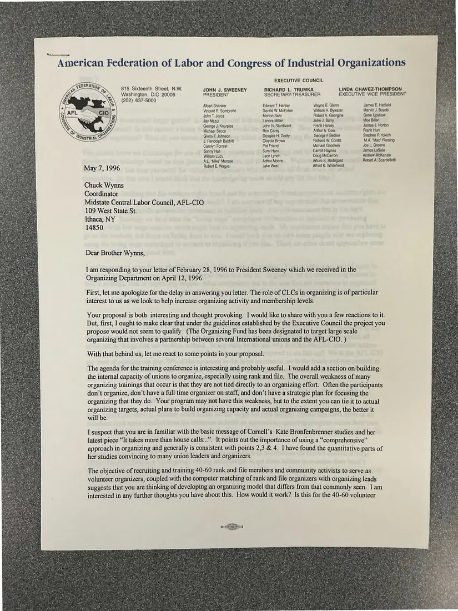
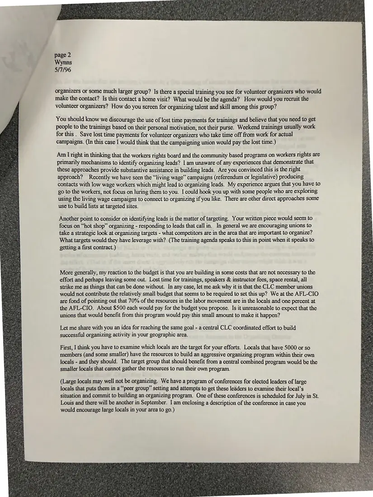
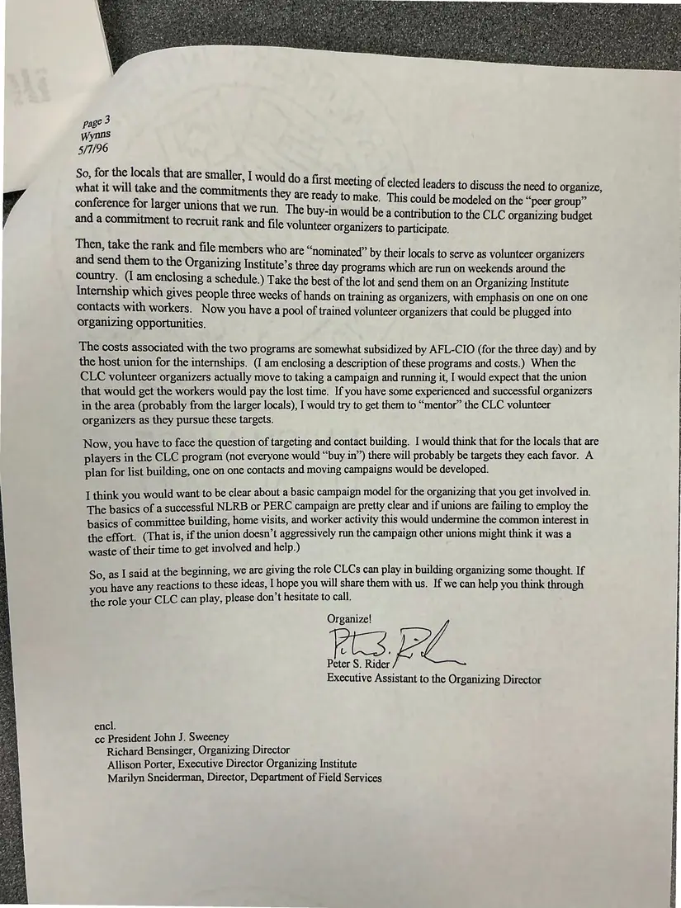

Letter, 3 pages
AFL-CIO Organizing Department response to Chuck Wynns's organizing proposal
May 7, 1996
Peter S. Rider of the AFL-CIO Organizing Department replies to the council's proposal. He discusses targeting, lost-time payments, using workers' rights boards and living wage campaigns to generate leads, peer-group conferences for small locals, and the Organizing Institute's training. Pages are shown in reading order.
Download or cite this itemPages


(open zoom view)Read the page text (machine-read, mostly readable)
This text was generated automatically from the photograph and has not been corrected. The image is the authoritative record.
American Federation of Labor and Congress of Industrial Organizations 815 Sixteenth Street, N.W. Washington, D.C 20006 (202) 637-5000 JOHN J. SWEENEY PRESIDENT Albert Shanker Vincent R. Sombrotio John T, Joyce Jay Mazur George J. Kourpias Michael Sacco Gloria T. Johnson J. Randolph Babbitt Carolyn Forrest Sonny Hall William Lucy A.L, “Mike” Monroe EXECUTIVE COUNCIL RICHARD L. TRUMKA SECRETARY-TREASURER Edward T. Hanley Gerald W. McEntee Morton Bahr Lenore Miller John N, Sturdivant Ron Carey Douglas H, Dority Clayola Brown Pat Friend Sumi Haru Leon Lynch Arthur Moore Wayne E, Glenn William H. Bywater Robert A. Georgine John J, Barry Frank Hanley Arthur A. Cola George F Becker Richard W, Cordtz Michael Goodwin Carroll Haynes Doug McCarron Arturo S, Rodriguez LINDA CHAVEZ-THOMPSON EXECUTIVE VICE PRESIDENT James E. Hatfield Marvin J. Boode Geno Upshaw Moo Biller James J. Norton Frank Hurt Stephen P. Yokich M.A, “Mac” Fleming Joe L. Greene James LaSala Andrew McKenzie Robert A. Scardelletti Robert E. Wages Jake West Alfred K. Whitehead May 7, 1996 Chuck Wynns Coordinator Midstate Central Labor Council, AFL-CIO 109 West State St. Ithaca, NY 14850 Dear Brother Wynns, I am responding to your letter of February 28, 1996 to President Sweeney which we received in the Organizing Department on April 12, 1996. First, let me apologize for the delay in answering you letter. The role of CLCs in organizing is of particular interest to us as we look to help increase organizing activity and membership levels. Your proposal is both interesting and thought provoking. I would like to share with you a few reactions to it. But, first, I ought to make clear that under the guidelines established by the Executive Council the project you propose would not seem to qualify. (The Organizing Fund has been designated to target large scale organizing that involves a partnership between several International unions and the AFL-CIO. ) With that behind us, let me react to some points in your proposal. The agenda for the training conference is interesting and probably useful. I would add a section on building the internal capacity of unions to organize, especially using rank and file. The overall weakness of many organizing trainings that occur is that they are not tied directly to an organizing effort. Often the participants don’t organize, don’t have a full time organizer on staff, and don’t have a strategic plan for focusing the organizing that they do. Your program may not have this weakness, but to the extent you can tie it to actual organizing targets, actual plans to build organizing capacity and actual organizing campaigns, the better it will be. I suspect that you are in familiar with the basic message of Cornell’s Kate Bronfenbrenner studies and her latest piece “It takes more than house calls...”. It points out the importance of using a “comprehensive” approach in organizing and generally is consistent with points 2,3 & 4. I have found the quantitative parts of her studies convincing to many union leaders and organizers. The objective of recruiting and training 40-60 rank and file members and community activists to serve as volunteer organizers, coupled with the computer matching of rank and file organizers with organizing leads suggests that you are thinking of developing an organizing model that differs from that commonly seen. I am interested in any further thoughts you have about this. How would it work? Is this for the 40-60 volunteer


(open zoom view)Read the page text (machine-read, mostly readable)
This text was generated automatically from the photograph and has not been corrected. The image is the authoritative record.
page 2 Wynns 5/7/96 organizers or some much larger group? Is there a special training you see for volunteer organizers who would make the contact? Is this contact a home visit? What would be the agenda? How would you recruit the volunteer organizers? How do you screen for organizing talent and skill among this group? You should know we discourage the use of lost time payments for trainings and believe that you need to get people to the trainings based on their personal motivation, not their purse. Weekend trainings usually work for this . Save lost time payments for volunteer organizers who take time off from work for actual campaigns. (In this case I would think that the campaigning union would pay the lost time.) Am I right in thinking that the workers rights board and the community based programs on workers rights are primarily mechanisms to identify organizing leads? 1 am unaware of any experiences that demonstrate that these approaches provide substantive assistance in building leads, Are you convinced this is the nght approach? Recently we have seen the “living wage” campaigns (referendum or legislative) producing contacts with low wage workers which might lead to organizing leads. My experience argues that you have to go to the workers, not focus on luring them to you. I could hook you up with some people who are exploring using the living wage campaigns to connect to organizing if you like. There are other direct approaches some use to build lists at targeted sites. Another point to consider on identifying leads is the matter of targeting. Your written piece would seem to focus on “hot shop” organizing - responding to leads that callin. In general we are encouraging unions to take a strategic look at organizing targets - what competitors are in the area that are important to organize? What targets would they have leverage with? (The training agenda speaks to this in point when it speaks to getting a first contract.) More generally, my reaction to the budget is that you are building in some costs that are not necessary to the effort and perhaps leaving some out. Lost time for trainings, speakers & instructor fees, space rental, all strike me as things that can be done without. In any case, let me ask why it is that the CLC member unions would not contribute the relatively small budget that seems to be required to set this up? We at the AFL-CIO are fond of pointing out that 70% of the resources in the labor movement are in the locals and one percent at the AFL-CIO. About $500 each would pay for the budget you propose. Is it unreasonable to expect that the unions that would benefit from this program would pay this small amount to make it happen? Let me share with you an idea for reaching the same goal - a central CLC coordinated effort to build successful organizing activity in your geographic area. First, I think you have to examine which locals are the target for your efforts. Locals that have 5000 or so members (and some smaller) have the resources to build an aggressive organizing program within their own locals - and they should. The target group that should benefit from a central combined program would be the smaller locals that cannot gather the resources to run their own program. (Large locals may well not be organizing. We have a program of conferences for elected leaders of large locals that puts them in a “peer group” setting and attempts to get these leaders to examine their local’s situation and commit to building an organizing program, One of these conferences is scheduled for July in St. Louis and there will be another in September. I am enclosing a description of the conference in case you would encourage large locals in your area to go.)


(open zoom view)Read the page text (machine-read, mostly readable)
This text was generated automatically from the photograph and has not been corrected. The image is the authoritative record.
Internship which gives people three weeks of hands on training as organizers, with emphasis on one on one contacts with workers. Now you have a pool of trained volunteer organizers that could be plugged into organizing opportunities. The costs associated with the two programs are somewhat subsidized by AFL-CIO (for the three day) and by the host union for the internships. (I am enclosing a description of these programs and costs.) When the CLC volunteer organizers actually move to taking a campaign and running it, I would expect that the union that would get the workers would pay the lost time. If you have some experienced and successful organizers in the area (probably from the larger locals), I would try to get them to “mentor” the CLC volunteer organizers as they pursue these targets. Now, you have to face the question of targeting and contact building. I would think that for the locals that are players in the CLC program (not everyone would “buy in”) there will probably be targets they each favor. A plan for list building, one on one contacts and moving campaigns would be developed. I think you would want to be clear about a basic campaign model for the organizing that you get involved in. The basics of a successful NLRB or PERC campaign are pretty clear and if unions are failing to employ the basics of committee building, home visits, and worker activity this would undermine the common interest in the effort. (That is, if the union doesn’t aggressively run the campaign other unions might think it was a waste of their time to get involved and help.) So. as I said at the beginning, we are giving the role CLCs can play in building organizing some thought. If you have any reactions to these ideas, I hope you will share them with us. If we can help you think through the role your CLC can play, please don’t hesitate to call. Organize! Bt PL Peter S. Rider Executive Assistant to the Organizing Director encl. cc President John J. Sweeney Richard Bensinger, Organizing Director Allison Porter, Executive Director Organizing Institute Marilyn Sneiderman, Director, Department of Field Services
See something wrong, or recognize a person or event? Send a correction. If you hold rights in this item or think it should not be public, write to the same address.